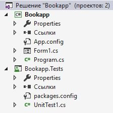

Тестирование ПО
Unit тестирование
Edward & Albert / github:Tgjmjgj
Содержание лекции
Типы тестирования

Юнит-тесты - самые низкоуровневые "мелкие" тесты.
Системное тестирование
Системное тестирование - вид тестирования, когда тест проверяет выполнение программой какой-либо полноценной составляющей бизнес-логики приложения.Например:
Проверка процесса регистрации нового пользователя - системный тест с результатом, показывающим работает ли функционал регистрации в целом.
Интеграционное тестирование
Интеграционное тестирование - вид тестирования, когда тест проверяет интеграции модулей приложения, взаимодействие нескольких элементов системы.Пример:
В процессе регистрации нового пользователя могут быть следующие интеграционные тесты:
- Проверка смены шагов регистрации пользователя
- Проверка отправки электронного письма по нажатию на кнопку
- Проверка добавления записи о новом пользователе в базу данных после подтверждения регистрации
Модульное тестирование
При модульном тестировании проверятся минимальный блок кода, который может дать некорректный результат.Из того же примера:
- Проверки разного ввода в поле Имени пользователя
- Проверки разного ввода в поле Адрес электронной почты
- Проверки разного ввода в поле Пароль
- Проверка вспомогательных функций в коде
- Проверка кнопки регистрации с предопределёнными данными
- Проверка функции перехода на шаг отправки электронного письма
- Проверка отправки информации о пользователе в хранилище
- Проверка вызова функции отправки письма
- Проверка приёма параметра временного ключа подтверждения регистрации
Интеграционное VS Модульное
Зачастую многие путают разницу между этими видами тестирования. Главное отличие в том, что интеграционное тестирование допускает наличие нескольких точек потенциального отказа, тогда как модульное тестирование проверяет только одну такую точку.
Модульное тестирование
ИтакМодульное тестирование, или юнит-тестирование - процесс в программировании, позволяющий проверить на корректность отдельные части (модули) исходного кода программы.Соответственно
Юнит-тест - методы, который обращается к тестируемому блоку кода и проверяет корректность его функционирования.
Свойства юнит-тестов
- Независимость
- Повторяемость
- Простота
Юнит тест абстрагирует тестируемый участок кода от всего остального, от всех зависимостей и влияния сторонних модулей.
Правила написания юнит тестов
Хорошие юнит тесты должны:- Не зависеть от окружения
- Легко поддерживаться
- Быть простыми для понимания
- Быстрыми для выполнения
- Соблюдать единые правила наименования
- Запускаться автоматически
Именование и расположение
В среде .NET приложений юнит-тесты принято выносить в отдельную сборку (проект), в одном решении (солюшене) с тестируемой сборкой.Называть тестовую сборку нужно именем сборки + слово Tests
Названия тестов
Тестовые классы нужно называть по аналгии с проектом - имя класса + Tests.Методы, как-нибудь так:
ИмяМетодаКоторыйТестируем_СутьДействия_ОжидаемыйРезультат
class UserControllerTests
{
public void AddUser_CorrectNewUser_True()
{
// ...
}
}
Паттерн AAA
Для написания самих юнит тестов принято использовать подход Arrange-Act-Assert.
Это подход подразумевает условное деление теста на три секции:
- Arrange - создание необходимых компонентов
- Act - произведение основного действия
- Assert - проверка результата
Демонстрация:
public void AddUser_CorrectNewUser_True()
{
// Arrange
var userList = new FakeUserStorage();
string username = "Vasiliy";
string email = "YaNeVasyan123@mail.ru";
string password = "SpartakChempion";
// Act
bool ret = Controller.AddUser(username, email, password);
// Assert
Assert.AreEquals(true, ret);
}
Юнит-тесты
Главное правило юнит-теста - нужно тестировать только одну вещь. Если процесс слишком сложен, разделите его на несколько более простых действий.
Так же и с функциями в вашем коде - если не получается написать юнит тест, значит вашему коду нужен рефакторинг.
Польза юнит-тестов
Таким образом, юнит тестирование способствует написанию красивого и качественного кода.
И чем раньше начать писать юнит тесты, тем проще держать ваш код в порядке. Добавление юнит тестов после разработки основного кода приложения может повлечь за собой практически полную переработку уже написанного функционала.
Фреймворки для юнит тестирования
Существует куча разных фреймворков, но в среде .NET выделяются 3 основных:
- MSTest/Visual Studio embedded
- NUnit
- XUnit.NET
Зависимости
Главной сложностью при создании юнит-тестов являются зависимости. В любое более-менее крупном приложении все функции переплетены со множеством зависимостей, и почти ничто не выполняется в абстрагированной среде.
Класс с зависимостями
public class UserController : ManagementController
{
private readonly ICashManager cashManager;
private readonly IUserCash userCash;
private readonly IUserManager userManager;
private readonly UserStatus status;
public UserController()
{
this.cashManager = CashManagerFactory.GetCashManager();
this.userCash = this.cashManager.GetComponent<IUserCash>();
this.userManager = UserManagerFactory.Get();
this.status = new AccountStatus("Open");
}
}
Фальшивая реализация
public class UserController : ManagementController
{
private readonly ICashManager cashManager;
private readonly IUserCash userCash;
private readonly IUserManager userManager;
private readonly UserStatus status;
public UserController()
{
this.cashManager = CashManagerFactory.GetCashManager();
this.userCash = this.cashManager.GetComponent<IUserCash>();
this.userManager = UserManagerFactory.Get();
this.status = new AccountStatus("Open");
}
///
/// For testability
///
///
///
public UserController(IUserCash userCash, IUserManager userManager)
{
this.userCash = userCash;
this.userManager = userManager;
this.status = new AccountStatus("Open");
}
}
Объекты-подделки
Существует 2 типа фальшивых объектов:
- Стабы (stubs)
- Моки (mock)
Стаб
Стаб - имитирующий определённое состояние объект, который необходим для работы тестируемого блока кода, но не является прямой целью тестирования.
Применяя стабы мы Assert-ом проверяем состояние тестируемого класса или результат выполнения какого-либо метода.
Стаб на картинке

Стаб в коде
public void GetUserInfo_ValidUser_FirstId()
{
// Arrange
IUserCash userCashStub = Stub.Of<IUserCash>();
IUserManager userManagerStub = Stub.Of<IUserManager>();
UserController ctrl = new UserController(userCashStub, userManagerStub);
ctrl.NewUser(1);
// Act
UserInfo inf = GetUserInfo(ctrl);
int userId = inf.GetIdOrDefault();
// Assert
Assert.That(userId != null);
}
Мок
Мок - фиктивный объект с некоторой внутренней логикой, в отличие от стаба он имеет определённые ожидания по своему использованию.
Как правило, при использовании мока, проверяется соответствие использования мока тестируемым классом, т.е. насколько правильно тестируемый класс работает с объектом, роль которого выполняет мок.
Мок на картинке

Мок в коде
public void AddPurchase_OneBook_TransactionVerify()
{
// Arrange
string bookId = "978-5-97060-415-1";
string accountId = "1020391"
TransactionManager tran = Mock.Of<TransactionManager>();
// Act
Store.AddPurchase(bookISBN, accountId, tran);
// Assert
tran.Verify(s => s.PurchaseBag(It.IsAny<Book>()), Count.Exactly(1));
tran.Verify(s => s.CostRequest(It.IsAny<int>()), Times.Once());
}
Тестирование состояния и тестирование взаимодействия
Представим, что стоит задача протестировать автоматизированную систему полива. Можно подойти к этой проблеме двумя способами...Тестирование состояния
Запускаем цикл полива (12 часов), и по истечению этого времени проверяем, хорошо ли политы растения, достаточно ли воды, каково состояние почвы и т.д.Для такого типа тестирования применяются стабы.
Тестирование взаимодействия
Во втором варианте, установим датчики, которые будут засекать, когда начался и закончился полив, сколько воды поступило из системы, равномерно ли распределяются струи и т.д.Для этого типа тестирования используются моки.
Изоляционные фреймворки
Изолирование зависимостей - самая сложная задача в модульном тестировании, поэтому и инструментов для её решения целая куча.
- Moq
- FakeItEasy
- NSubstitute
- Rhino Mocks
- Microsoft Fakes (Moles)
Способы Dependency Injection
Вообще, не существует строгих правил по ведению внедрения зависимостей, это определяется конкретной ситуацией и спецификой кода. Однако можно выделить некоторые наиболее распространённые варианты.
Инъекция в конструктор
Самый простой вариант - добавляем дополнительный конструктор или заменяем текущий. Этот подход был показан в примерах выше.
Инъекция в фабрику
Метод для внедрения зависимости можно дополнительно «спрятать» от основного приложения, если выделить интерфейс фабрики и работать в продакшн-коде по интерфейсной ссылке.
public interface IUserManagerFactory
{
IUserManager Get();
IUserManger Get(UserConfigurationSection config);
}
public class UserManagerFactory : IUserManagerFactory
{
private IUserManager _instance;
///
/// Get UserManager instance
///
/// IUserManager with configuration from the configuration file
public IUserManager Get()
{
return _instance ?? Get(UserConfigurationSection.GetSection());
}
private IUserManager Get(UserConfigurationSection config)
{
return _instance ?? (_instance = Create(config));
}
///
/// For testing purposes only!
///
///
public void Set(IUserManager userManager)
{
_instance = userManager;
}
}
Подмена фабрики
Вариант с подменой фабрики целиком. Это потребует выделение интерфейса или создание виртуальной функции, создание объектов. После этого вы сможете переопределить фабричные методы так, чтобы они возвращали ваши подделки.
public interface IUserManagerFactory
{
IUserManager Get();
IUserManger Get(UserConfigurationSection config);
}
public class UserManagerFactory : IUserManagerFactory
{
private IUserManager _instance;
///
/// Get UserManager instance
///
/// IUserManager with configuration from the configuration file
public IUserManager Get()
{
return _instance ?? Get(UserConfigurationSection.GetSection());
}
private IUserManager Get(UserConfigurationSection config)
{
return _instance ?? (_instance = Create(config));
}
}
public class FakeUserManagerFactory : IUserManagerFactory
{
public IUserManager Get()
{
return new MyUserManager("true", 1);
}
public IUserManager Get(UserConfigurationSection config)
{
var userMng = new MyUserManager("true", 1);
GlobalAdapter.Fill(userMng, config: true);
userMng.Validate();
return userMng;
}
}
Переопределение локального фабричного метода
Если зависимости инстанцируются прямо в коде явным образом, то самый простой путь – выделить фабричный protected-метод CreateObjectName() и переопределить его в классе-наследнике. После этого тестируйте класс-наследник, а не ваш первоначально тестируемый класс. Например, мы решили написать расширяемый калькулятор (со сложными действиями) и начали выделять новый слой абстракции.
Класс калькулятор
public class Calculator
{
public double Multipy(double a, double b)
{
var multiplier = new Multiplier();
return multiplier.Execute(a, b);
}
}
public interface IArithmetic
{
double Execute(double a, double b);
}
public class Multiplier : IArithmetic
{
public double Execute(double a, double b)
{
return a * b;
}
}
Итак
Мы не хотим тестировать класс Multiplier, для него будут отдельные тесты.
Нужно переписать код следующим образом:
Усовершенствованный код
public class Calculator
{
public double Multipy(double a, double b)
{
var multiplier = CreateMultiplier();
return multiplier.Execute(a, b);
}
protected virtual IArithmetic CreateMultiplier()
{
var multiplier = new Multiplier();
return multiplier;
}
}
public class CalculatorUnderTest : Calculator
{
protected override IArithmetic CreateMultiplier()
{
return new FakeMultiplier();
}
}
public class FakeMultiplier : IArithmetic
{
public double Execute(double a, double b)
{
return 5;
}
}
Тестируемость кода
Все эти способы могут показаться довольно сложными и требующими переработки уже существующего кода.
Но чтобы писать правильный тестируемый код достаточно придерживать нескольких полезных рекомендаций.
Рекомендации по написанию кода
- Мыслите интерфейсами, а не классами. Это позволяет Легко подменять настоящие реализации подделками в тестовом коде.
- Избегайте прямого инстанцирования объектов внутри методов с логикой. Используйте фабрики или dependency inhection.
- Избегайте прямого вызова статических методов.
- Не реализовывайте логику в коде конструкторов.
Не идёт
Если у вас всё равно возникают проблемы с написанием юнит тестов, под методы ваших классов - скорее всего, вы плохо спроектировали свою систему, стоит пересмотреть её архитектуру и проверить качество кода.
Рефакторинг уже близко
Если перед вами встала необходимость покрыть тестами код, который был написан без их применения - будьте готовы к комплексному многоуровневому рефакторингу.
Значение юнит-тестов
Не относитесь к юнит-тестам, как к второстепенному коду.
Тесты играют немаловажную роль для кода приложения - доказывают его функционирование.
Также юнит тесты незаменимы для регрессивного тестирования.
Покрытие кода
Покрытие кода тестами - метрика, показывающая насколько полно производится тестирования написанного кода.
Для определения этой величины существуют специальные инструменты:
- NCover
- dotTrace
- Test Coverage
Дополнительно
Крутая книга по юнит-тестированию:
The Art Of Unit Testing / Искусство автономного тестирования с примерами на C#
Список библиотек для всевозможного тестирования на платформе .NET